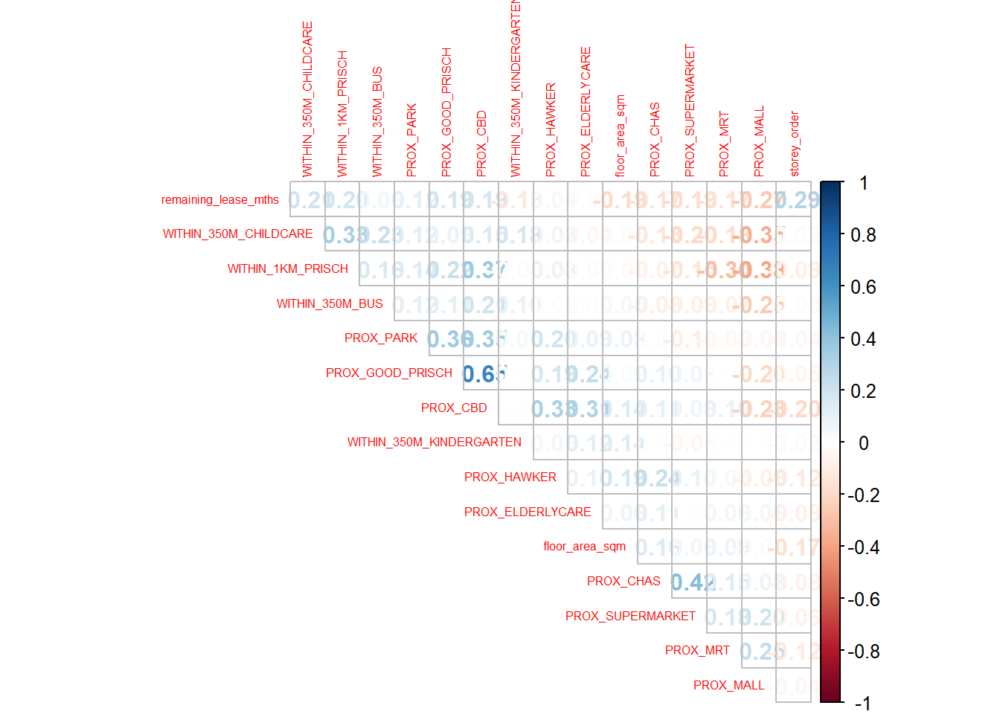

pacman::p_load(sf, spdep, GWmodel, SpatialML,
tmap, rsample, Metrics, tidyverse)In-class Exercise 9: Building Predictive Models with Geographical Weighted Random Forest Method
Overview
Predictive modelling uses statistical learning or machine learning techniques to predict outcomes. By and large, the event one wants to predict is in the future. However, a set of known outcome and predictors (also known as variables) will be used to calibrate the predictive models.
Geospatial predictive modelling is conceptually rooted in the principle that the occurrences of events being modeled are limited in distribution. When geographically referenced data are used, occurrences of events are neither uniform nor random in distribution over space. There are geospatial factors (infrastructure, sociocultural, topographic, etc.) that constrain and influence where the locations of events occur. Geospatial predictive modeling attempts to describe those constraints and influences by spatially correlating occurrences of historical geospatial locations with environmental factors that represent those constraints and influences.
Learning outcome
In this in-class exercise, you will learn how to build predictive model by using geographical random forest method. By the end of this hands-on exercise, you will acquire the skills of:
- preparing training and test data sets by using appropriate data sampling methods,
- calibrating predictive models by using both geospatial statistical learning and machine learning methods,
- comparing and selecting the best model for predicting the future outcome,
- predicting the future outcomes by using the best model calibrated.
The Data
- Aspatial dataset:
- HDB Resale data: a list of HDB resale transacted prices in Singapore from Jan 2017 onwards. It is in csv format which can be downloaded from Data.gov.sg.
- Geospatial dataset:
- MP14_SUBZONE_WEB_PL: a polygon feature data providing information of URA 2014 Master Plan Planning Subzone boundary data. It is in ESRI shapefile format. This data set was also downloaded from Data.gov.sg
- Locational factors with geographic coordinates:
- Downloaded from Data.gov.sg.
- Eldercare data is a list of eldercare in Singapore. It is in shapefile format.
- Hawker Centre data is a list of hawker centres in Singapore. It is in geojson format.
- Parks data is a list of parks in Singapore. It is in geojson format.
- Supermarket data is a list of supermarkets in Singapore. It is in geojson format.
- CHAS clinics data is a list of CHAS clinics in Singapore. It is in geojson format.
- Childcare service data is a list of childcare services in Singapore. It is in geojson format.
- Kindergartens data is a list of kindergartens in Singapore. It is in geojson format.
- Downloaded from Datamall.lta.gov.sg.
- MRT data is a list of MRT/LRT stations in Singapore with the station names and codes. It is in shapefile format.
- Bus stops data is a list of bus stops in Singapore. It is in shapefile format.
- Downloaded from Data.gov.sg.
- Locational factors without geographic coordinates:
- Downloaded from Data.gov.sg.
- Primary school data is extracted from the list on General information of schools from data.gov portal. It is in csv format.
- Retrieved/Scraped from other sources
- CBD coordinates obtained from Google.
- Shopping malls data is a list of Shopping malls in Singapore obtained from Wikipedia.
- Good primary schools is a list of primary schools that are ordered in ranking in terms of popularity and this can be found at Local Salary Forum.
- Downloaded from Data.gov.sg.
Installing and Loading R packages
This code chunk performs 3 tasks:
- A list called packages will be created and will consists of all the R packages required to accomplish this exercise.
- Check if R packages on package have been installed in R and if not, they will be installed.
- After all the R packages have been installed, they will be loaded.
Preparing Data
Reading data file to rds
Reading the input data sets. It is in simple feature data frame.
mdata <- read_rds("data/model/mdata.rds")Data Sampling
The entire data are split into training and test data sets with 65% and 35% respectively by using initial_split() of rsample package. rsample is one of the package of tigymodels.
set.seed(1234)
resale_split <- initial_split(mdata,
prop = 6.5/10,)
train_data <- training(resale_split)
test_data <- testing(resale_split)write_rds(train_data, "data/model/train_data.rds")
write_rds(test_data, "data/model/test_data.rds")Computing Correlation Matrix
Before loading the predictors into a predictive model, it is always a good practice to use correlation matrix to examine if there is sign of multicolinearity.
mdata_nogeo <- mdata %>%
st_drop_geometry()
corrplot::corrplot(cor(mdata_nogeo[, 2:17]),
diag = FALSE,
order = "AOE",
tl.pos = "td",
tl.cex = 0.5,
method = "number",
type = "upper")
Note
The correlation matrix above shows that all the correlation values are below 0.8. Hence, there is no sign of multicolinearity.
Retriving the Stored Data
train_data <- read_rds("data/model/train_data.rds")
test_data <- read_rds("data/model/test_data.rds")Building a non-spatial multiple linear regression
price_mlr <- lm(resale_price ~ floor_area_sqm +
storey_order + remaining_lease_mths +
PROX_CBD + PROX_ELDERLYCARE + PROX_HAWKER +
PROX_MRT + PROX_PARK + PROX_MALL +
PROX_SUPERMARKET + WITHIN_350M_KINDERGARTEN +
WITHIN_350M_CHILDCARE + WITHIN_350M_BUS +
WITHIN_1KM_PRISCH,
data=train_data)
summary(price_mlr)
Call:
lm(formula = resale_price ~ floor_area_sqm + storey_order + remaining_lease_mths +
PROX_CBD + PROX_ELDERLYCARE + PROX_HAWKER + PROX_MRT + PROX_PARK +
PROX_MALL + PROX_SUPERMARKET + WITHIN_350M_KINDERGARTEN +
WITHIN_350M_CHILDCARE + WITHIN_350M_BUS + WITHIN_1KM_PRISCH,
data = train_data)
Residuals:
Min 1Q Median 3Q Max
-205193 -39120 -1930 36545 472355
Coefficients:
Estimate Std. Error t value Pr(>|t|)
(Intercept) 107601.073 10601.261 10.150 < 2e-16 ***
floor_area_sqm 2780.698 90.579 30.699 < 2e-16 ***
storey_order 14299.298 339.115 42.167 < 2e-16 ***
remaining_lease_mths 344.490 4.592 75.027 < 2e-16 ***
PROX_CBD -16930.196 201.254 -84.124 < 2e-16 ***
PROX_ELDERLYCARE -14441.025 994.867 -14.516 < 2e-16 ***
PROX_HAWKER -19265.648 1273.597 -15.127 < 2e-16 ***
PROX_MRT -32564.272 1744.232 -18.670 < 2e-16 ***
PROX_PARK -5712.625 1483.885 -3.850 0.000119 ***
PROX_MALL -14717.388 2007.818 -7.330 2.47e-13 ***
PROX_SUPERMARKET -26881.938 4189.624 -6.416 1.46e-10 ***
WITHIN_350M_KINDERGARTEN 8520.472 632.812 13.464 < 2e-16 ***
WITHIN_350M_CHILDCARE -4510.650 354.015 -12.741 < 2e-16 ***
WITHIN_350M_BUS 813.493 222.574 3.655 0.000259 ***
WITHIN_1KM_PRISCH -8010.834 491.512 -16.298 < 2e-16 ***
---
Signif. codes: 0 '***' 0.001 '**' 0.01 '*' 0.05 '.' 0.1 ' ' 1
Residual standard error: 61650 on 10320 degrees of freedom
Multiple R-squared: 0.7373, Adjusted R-squared: 0.737
F-statistic: 2069 on 14 and 10320 DF, p-value: < 2.2e-16write_rds(price_mlr, "data/model/price_mlr.rds" ) gwr predictive method
In this section, you will learn how to calibrate a model to predict HDB resale price by using geographically weighted regression method of GWmodel package.
Converting the sf data.frame to SpatialPointDataFrame
train_data_sp <- as_Spatial(train_data)
train_data_spclass : SpatialPointsDataFrame
features : 10335
extent : 11597.31, 42623.63, 28217.39, 48741.06 (xmin, xmax, ymin, ymax)
crs : +proj=tmerc +lat_0=1.36666666666667 +lon_0=103.833333333333 +k=1 +x_0=28001.642 +y_0=38744.572 +ellps=WGS84 +towgs84=0,0,0,0,0,0,0 +units=m +no_defs
variables : 17
names : resale_price, floor_area_sqm, storey_order, remaining_lease_mths, PROX_CBD, PROX_ELDERLYCARE, PROX_HAWKER, PROX_MRT, PROX_PARK, PROX_GOOD_PRISCH, PROX_MALL, PROX_CHAS, PROX_SUPERMARKET, WITHIN_350M_KINDERGARTEN, WITHIN_350M_CHILDCARE, ...
min values : 218000, 74, 1, 555, 0.999393538715878, 1.98943787433087e-08, 0.0333358643817954, 0.0220407324774434, 0.0441643212802781, 0.0652540365486641, 0, 6.20621206270077e-09, 1.21715176356525e-07, 0, 0, ...
max values : 1186888, 133, 17, 1164, 19.6500691667807, 3.30163731686804, 2.86763031236184, 2.13060636038504, 2.41313695915468, 10.6223726149914, 2.27100643784442, 0.808332738794272, 1.57131703651196, 7, 20, ... Computing adaptive bandwidth
Next, bw.gwr() of GWmodel package will be used to determine the optimal bandwidth to be used.
Note
The code chunk below is used to determine adaptive bandwidth and CV method is used to dcetermine the optimal bandwidth.
bw_adaptive <- bw.gwr(resale_price ~ floor_area_sqm +
storey_order + remaining_lease_mths +
PROX_CBD + PROX_ELDERLYCARE + PROX_HAWKER +
PROX_MRT + PROX_PARK + PROX_MALL +
PROX_SUPERMARKET + WITHIN_350M_KINDERGARTEN +
WITHIN_350M_CHILDCARE + WITHIN_350M_BUS +
WITHIN_1KM_PRISCH,
data=train_data_sp,
approach="CV",
kernel="gaussian",
adaptive=TRUE,
longlat=FALSE)The result shows that 40 neighbour points will be the optimal bandwidth to be used if adaptive bandwidth is used for this data set.
write_rds(bw_adaptive, "data/model/bw_adaptive.rds")Constructing the adaptive bandwidth gwr model
First, let us call the save bandwidth by using the code chunk below.
bw_adaptive <- read_rds("data/model/bw_adaptive.rds")Now, we can go ahead to calibrate the gwr-based hedonic pricing model by using adaptive bandwidth and Gaussian kernel as shown in the code chunk below.
gwr_adaptive <- gwr.basic(formula = resale_price ~
floor_area_sqm + storey_order +
remaining_lease_mths + PROX_CBD +
PROX_ELDERLYCARE + PROX_HAWKER +
PROX_MRT + PROX_PARK + PROX_MALL +
PROX_SUPERMARKET + WITHIN_350M_KINDERGARTEN +
WITHIN_350M_CHILDCARE + WITHIN_350M_BUS +
WITHIN_1KM_PRISCH,
data=train_data_sp,
bw=bw_adaptive,
kernel = 'gaussian',
adaptive=TRUE,
longlat = FALSE)The code chunk below will be used to save the model in rds format for future use.
write_rds(gwr_adaptive, "data/model/gwr_adaptive.rds")Retrieve gwr output object
The code chunk below will be used to retrieve the save gwr model object.
gwr_adaptive <- read_rds("data/model/gwr_adaptive.rds")The code below can be used to display the model output.
gwr_adaptive ***********************************************************************
* Package GWmodel *
***********************************************************************
Program starts at: 2023-03-19 09:40:27
Call:
gwr.basic(formula = resale_price ~ floor_area_sqm + storey_order +
remaining_lease_mths + PROX_CBD + PROX_ELDERLYCARE + PROX_HAWKER +
PROX_MRT + PROX_PARK + PROX_MALL + PROX_SUPERMARKET + WITHIN_350M_KINDERGARTEN +
WITHIN_350M_CHILDCARE + WITHIN_350M_BUS + WITHIN_1KM_PRISCH,
data = train_data_sp, bw = bw_adaptive, kernel = "gaussian",
adaptive = TRUE, longlat = FALSE)
Dependent (y) variable: resale_price
Independent variables: floor_area_sqm storey_order remaining_lease_mths PROX_CBD PROX_ELDERLYCARE PROX_HAWKER PROX_MRT PROX_PARK PROX_MALL PROX_SUPERMARKET WITHIN_350M_KINDERGARTEN WITHIN_350M_CHILDCARE WITHIN_350M_BUS WITHIN_1KM_PRISCH
Number of data points: 10335
***********************************************************************
* Results of Global Regression *
***********************************************************************
Call:
lm(formula = formula, data = data)
Residuals:
Min 1Q Median 3Q Max
-205193 -39120 -1930 36545 472355
Coefficients:
Estimate Std. Error t value Pr(>|t|)
(Intercept) 107601.073 10601.261 10.150 < 2e-16 ***
floor_area_sqm 2780.698 90.579 30.699 < 2e-16 ***
storey_order 14299.298 339.115 42.167 < 2e-16 ***
remaining_lease_mths 344.490 4.592 75.027 < 2e-16 ***
PROX_CBD -16930.196 201.254 -84.124 < 2e-16 ***
PROX_ELDERLYCARE -14441.025 994.867 -14.516 < 2e-16 ***
PROX_HAWKER -19265.648 1273.597 -15.127 < 2e-16 ***
PROX_MRT -32564.272 1744.232 -18.670 < 2e-16 ***
PROX_PARK -5712.625 1483.885 -3.850 0.000119 ***
PROX_MALL -14717.388 2007.818 -7.330 2.47e-13 ***
PROX_SUPERMARKET -26881.938 4189.624 -6.416 1.46e-10 ***
WITHIN_350M_KINDERGARTEN 8520.472 632.812 13.464 < 2e-16 ***
WITHIN_350M_CHILDCARE -4510.650 354.015 -12.741 < 2e-16 ***
WITHIN_350M_BUS 813.493 222.574 3.655 0.000259 ***
WITHIN_1KM_PRISCH -8010.834 491.512 -16.298 < 2e-16 ***
---Significance stars
Signif. codes: 0 '***' 0.001 '**' 0.01 '*' 0.05 '.' 0.1 ' ' 1
Residual standard error: 61650 on 10320 degrees of freedom
Multiple R-squared: 0.7373
Adjusted R-squared: 0.737
F-statistic: 2069 on 14 and 10320 DF, p-value: < 2.2e-16
***Extra Diagnostic information
Residual sum of squares: 3.922202e+13
Sigma(hat): 61610.08
AIC: 257320.2
AICc: 257320.3
BIC: 247249
***********************************************************************
* Results of Geographically Weighted Regression *
***********************************************************************
*********************Model calibration information*********************
Kernel function: gaussian
Adaptive bandwidth: 40 (number of nearest neighbours)
Regression points: the same locations as observations are used.
Distance metric: Euclidean distance metric is used.
****************Summary of GWR coefficient estimates:******************
Min. 1st Qu. Median 3rd Qu.
Intercept -3.2478e+08 -4.7727e+05 -8.3004e+03 5.5025e+05
floor_area_sqm -2.8714e+04 1.4475e+03 2.3011e+03 3.3900e+03
storey_order 3.3186e+03 8.5899e+03 1.0826e+04 1.3397e+04
remaining_lease_mths -1.4431e+03 2.6063e+02 3.9048e+02 5.2865e+02
PROX_CBD -1.0837e+07 -5.7697e+04 -1.3787e+04 2.6552e+04
PROX_ELDERLYCARE -3.2195e+07 -4.0643e+04 1.0562e+04 6.1054e+04
PROX_HAWKER -2.3985e+08 -5.1365e+04 3.0026e+03 6.4287e+04
PROX_MRT -1.1632e+07 -1.0488e+05 -4.9373e+04 5.1037e+03
PROX_PARK -6.5961e+06 -4.8671e+04 -8.8128e+02 5.3498e+04
PROX_MALL -1.8112e+07 -7.4238e+04 -1.3982e+04 4.9779e+04
PROX_SUPERMARKET -4.5761e+06 -6.3461e+04 -1.7429e+04 3.5616e+04
WITHIN_350M_KINDERGARTEN -4.1823e+05 -6.0040e+03 9.0209e+01 4.7127e+03
WITHIN_350M_CHILDCARE -1.0273e+05 -2.2375e+03 2.6668e+02 2.6388e+03
WITHIN_350M_BUS -1.1757e+05 -1.4719e+03 1.1626e+02 1.7584e+03
WITHIN_1KM_PRISCH -6.6465e+05 -5.5959e+03 2.6916e+02 5.7500e+03
Max.
Intercept 1.6493e+08
floor_area_sqm 5.0907e+04
storey_order 2.9537e+04
remaining_lease_mths 1.8119e+03
PROX_CBD 2.2411e+07
PROX_ELDERLYCARE 8.2444e+07
PROX_HAWKER 5.9654e+06
PROX_MRT 2.0189e+08
PROX_PARK 1.5188e+07
PROX_MALL 1.0443e+07
PROX_SUPERMARKET 3.8330e+06
WITHIN_350M_KINDERGARTEN 6.6799e+05
WITHIN_350M_CHILDCARE 1.0802e+05
WITHIN_350M_BUS 3.7313e+04
WITHIN_1KM_PRISCH 5.0231e+05
************************Diagnostic information*************************
Number of data points: 10335
Effective number of parameters (2trace(S) - trace(S'S)): 1730.101
Effective degrees of freedom (n-2trace(S) + trace(S'S)): 8604.899
AICc (GWR book, Fotheringham, et al. 2002, p. 61, eq 2.33): 238871.9
AIC (GWR book, Fotheringham, et al. 2002,GWR p. 96, eq. 4.22): 237036.9
BIC (GWR book, Fotheringham, et al. 2002,GWR p. 61, eq. 2.34): 238209.1
Residual sum of squares: 4.829191e+12
R-square value: 0.967657
Adjusted R-square value: 0.9611534
***********************************************************************
Program stops at: 2023-03-19 09:41:39 Converting the test data from sf data.frame to SpatialPointDataFrame
test_data_sp <- test_data %>%
as_Spatial()
test_data_spclass : SpatialPointsDataFrame
features : 5566
extent : 11597.31, 42623.63, 28287.8, 48669.59 (xmin, xmax, ymin, ymax)
crs : +proj=tmerc +lat_0=1.36666666666667 +lon_0=103.833333333333 +k=1 +x_0=28001.642 +y_0=38744.572 +ellps=WGS84 +towgs84=0,0,0,0,0,0,0 +units=m +no_defs
variables : 17
names : resale_price, floor_area_sqm, storey_order, remaining_lease_mths, PROX_CBD, PROX_ELDERLYCARE, PROX_HAWKER, PROX_MRT, PROX_PARK, PROX_GOOD_PRISCH, PROX_MALL, PROX_CHAS, PROX_SUPERMARKET, WITHIN_350M_KINDERGARTEN, WITHIN_350M_CHILDCARE, ...
min values : 230888, 74, 1, 546, 1.00583660772922, 3.34897933104965e-07, 0.0474019664161957, 0.0414043955932523, 0.0502664084494264, 0.0907500295577619, 0, 4.55547870890763e-09, 1.21715176356525e-07, 0, 0, ...
max values : 1050000, 138, 14, 1151, 19.632402730488, 3.30163731686804, 2.83106651960209, 2.13060636038504, 2.41313695915468, 10.6169590126272, 2.26056404492346, 0.79249074802552, 1.53786629004208, 7, 16, ... Computing adaptive bandwidth for the test data
gwr_bw_test_adaptive <- bw.gwr(resale_price ~ floor_area_sqm +
storey_order + remaining_lease_mths +
PROX_CBD + PROX_ELDERLYCARE + PROX_HAWKER +
PROX_MRT + PROX_PARK + PROX_MALL +
PROX_SUPERMARKET + WITHIN_350M_KINDERGARTEN +
WITHIN_350M_CHILDCARE + WITHIN_350M_BUS +
WITHIN_1KM_PRISCH,
data=test_data_sp,
approach="CV",
kernel="gaussian",
adaptive=TRUE,
longlat=FALSE)Computing predicted valuesthe test data
gwr_pred <- gwr.predict(formula = resale_price ~
floor_area_sqm + storey_order +
remaining_lease_mths + PROX_CBD +
PROX_ELDERLYCARE + PROX_HAWKER +
PROX_MRT + PROX_PARK + PROX_MALL +
PROX_SUPERMARKET + WITHIN_350M_KINDERGARTEN +
WITHIN_350M_CHILDCARE + WITHIN_350M_BUS +
WITHIN_1KM_PRISCH,
data=train_data_sp,
predictdata = test_data_sp,
bw=40,
kernel = 'gaussian',
adaptive=TRUE,
longlat = FALSE)Preparing coordinates data
Extracting coordinates data
The code chunk below extract the x,y coordinates of the full, training and test data sets.
coords <- st_coordinates(mdata)
coords_train <- st_coordinates(train_data)
coords_test <- st_coordinates(test_data)Before continue, we write all the output into rds for future used.
coords_train <- write_rds(coords_train, "data/model/coords_train.rds" )
coords_test <- write_rds(coords_test, "data/model/coords_test.rds" )Droping geometry field
First, we will drop geometry column of the sf data.frame by using st_drop_geometry() of sf package.
train_data <- train_data %>%
st_drop_geometry()Calibrating Random Forest Model
In this section, you will learn how to calibrate a model to predict HDB resale price by using random forest function of ranger package.
set.seed(1234)
rf <- ranger(resale_price ~ floor_area_sqm + storey_order +
remaining_lease_mths + PROX_CBD + PROX_ELDERLYCARE +
PROX_HAWKER + PROX_MRT + PROX_PARK + PROX_MALL +
PROX_SUPERMARKET + WITHIN_350M_KINDERGARTEN +
WITHIN_350M_CHILDCARE + WITHIN_350M_BUS +
WITHIN_1KM_PRISCH,
data=train_data)
rfRanger result
Call:
ranger(resale_price ~ floor_area_sqm + storey_order + remaining_lease_mths + PROX_CBD + PROX_ELDERLYCARE + PROX_HAWKER + PROX_MRT + PROX_PARK + PROX_MALL + PROX_SUPERMARKET + WITHIN_350M_KINDERGARTEN + WITHIN_350M_CHILDCARE + WITHIN_350M_BUS + WITHIN_1KM_PRISCH, data = train_data)
Type: Regression
Number of trees: 500
Sample size: 10335
Number of independent variables: 14
Mtry: 3
Target node size: 5
Variable importance mode: none
Splitrule: variance
OOB prediction error (MSE): 728602496
R squared (OOB): 0.9495728 write_rds(rf, "data/model/rf.rds")rf <- read_rds("data/model/rf.rds")
rfRanger result
Call:
ranger(resale_price ~ floor_area_sqm + storey_order + remaining_lease_mths + PROX_CBD + PROX_ELDERLYCARE + PROX_HAWKER + PROX_MRT + PROX_PARK + PROX_MALL + PROX_SUPERMARKET + WITHIN_350M_KINDERGARTEN + WITHIN_350M_CHILDCARE + WITHIN_350M_BUS + WITHIN_1KM_PRISCH, data = train_data)
Type: Regression
Number of trees: 500
Sample size: 10335
Number of independent variables: 14
Mtry: 3
Target node size: 5
Variable importance mode: none
Splitrule: variance
OOB prediction error (MSE): 728602496
R squared (OOB): 0.9495728 Calibrating Geographical Random Forest Model
In this section, you will learn how to calibrate a model to predict HDB resale price by using grf() of SpatialML package.
Calibrating using training data
The code chunk below calibrate a geographic ranform forest model by using grf() of SpatialML package.
set.seed(1234)
gwRF_adaptive <- grf(formula = resale_price ~ floor_area_sqm + storey_order +
remaining_lease_mths + PROX_CBD + PROX_ELDERLYCARE +
PROX_HAWKER + PROX_MRT + PROX_PARK + PROX_MALL +
PROX_SUPERMARKET + WITHIN_350M_KINDERGARTEN +
WITHIN_350M_CHILDCARE + WITHIN_350M_BUS +
WITHIN_1KM_PRISCH,
dframe=train_data,
bw=55,
kernel="adaptive",
coords=coords_train)Let’s save the model output by using the code chunk below.
write_rds(gwRF_adaptive, "data/model/gwRF_adaptive.rds")The code chunk below can be used to retrieve the save model in future.
gwRF_adaptive <- read_rds("data/model/gwRF_adaptive.rds")Predicting by using test data
Preparing the test data
The code chunk below will be used to combine the test data with its corresponding coordinates data.
test_data <- cbind(test_data, coords_test) %>%
st_drop_geometry()Predicting with test data
Next, predict.grf() of spatialML package will be used to predict the resale value by using the test data and gwRF_adaptive model calibrated earlier.
gwRF_pred <- predict.grf(gwRF_adaptive,
test_data,
x.var.name="X",
y.var.name="Y",
local.w=1,
global.w=0)Before moving on, let us save the output into rds file for future use.
GRF_pred <- write_rds(gwRF_pred, "data/model/GRF_pred.rds")Converting the predicting output into a data frame
The output of the predict.grf() is a vector of predicted values. It is wiser to convert it into a data frame for further visualisation and analysis.
GRF_pred <- read_rds("data/model/GRF_pred.rds")
GRF_pred_df <- as.data.frame(GRF_pred)In the code chunk below, cbind() is used to append the predicted values onto test_datathe
test_data_p <- cbind(test_data, GRF_pred_df)write_rds(test_data_p, "data/model/test_data_p.rds")Calculating Root Mean Square Error
The root mean square error (RMSE) allows us to measure how far predicted values are from observed values in a regression analysis. In the code chunk below, rmse() of Metrics package is used to compute the RMSE.
rmse(test_data_p$resale_price,
test_data_p$GRF_pred)[1] 27302.9Visualising the predicted values
Alternatively, scatterplot can be used to visualise the actual resale price and the predicted resale price by using the code chunk below.
ggplot(data = test_data_p,
aes(x = GRF_pred,
y = resale_price)) +
geom_point()
Note
A better predictive model should have the scatter point close to the diagonal line. The scatter plot can be also used to detect if any outliers in the model.